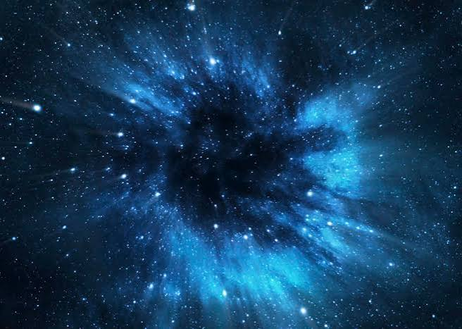
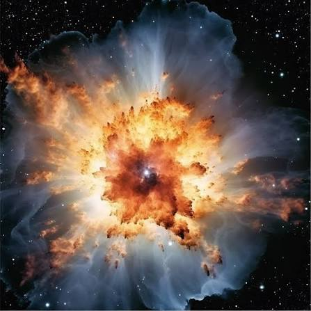
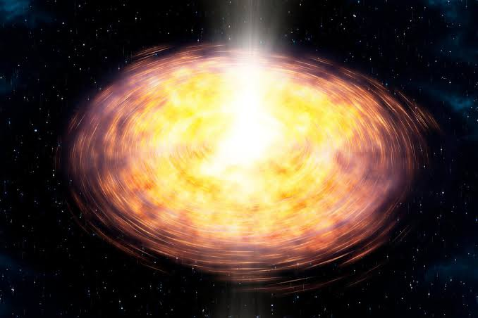

La palabra nebulosa proviene del latín y significa nube. Se trata de vastas regiones de gas, polvo y plasma interestelar dispersas por el espacio. Estas nubes celestes presentan diversas formas, tamaños y colores, y cada una narra una historia única sobre el nacimiento, la evolución y la muerte de las estrellas.
Las nebulosas están compuestas principalmente de hidrógeno y helio, con pequeñas cantidades de elementos más pesados y polvo. A menudo son el lugar de nacimiento de las estrellas. Las regiones dentro de una nebulosa pueden colapsar por efecto de la gravedad, dando lugar a la formación de nuevas estrellas y sistemas planetarios.
Las nebulosas se encuentran entre las estructuras más grandes del universo, algunas abarcan varios cientos de años luz de diámetro.
Nebulosa de emision
Uno de los tipos más comunes de nebulosas es la nebulosa de emisión, compuesta principalmente de hidrógeno ionizado, que emite luz creando un impresionante espectáculo de luminosidad. Las nebulosas de emisión suelen ser “viveros estelares” donde nacen nuevas estrellas a partir del colapso gravitacional de las densas nubes. Los astrónomos pueden analizar el espectro de luz y determinar la composición, la temperatura, la densidad y el movimiento del gas.
Nebulosa de reflexion
A diferencia de las nebulosas de emisión, las nebulosas de reflexión no emiten luz propia, sino que reflejan la luz de las estrellas cercanas, iluminando el polvo cósmico circundante. Las nebulosas de reflexión se encuentran a menudo en regiones de formación estelar y pueden indicar la presencia de estrellas jóvenes y calientes. La Nebulosa Cabeza de Bruja es un ejemplo de nebulosa de reflexión.
Nebulosa planetaria
Estas nebulosas son remanentes de estrellas de masa baja a intermedia en las etapas finales de su evolución. A medida que estas estrellas agotan su combustible, expulsan sus capas exteriores al espacio, formando una brillante envoltura de gas ionizado alrededor del núcleo estelar, conocida como enana blanca. Las nebulosas planetarias reciben este nombre por su parecido con los planetas cuando se observan a través de los primeros telescopios.
Nebulosa oscura
Las nebulosas oscuras, o nebulosas de absorción, son densas nubes de polvo y gas que ocultan la luz de las estrellas de fondo debido a que los granos de polvo absorben y dispersan la luz visible. A pesar de su aparente vacío, las nebulosas oscuras desempeñan un papel crucial en el ciclo de vida de una estrella. A medida que las estrellas se forman, pueden ionizar el gas circundante (convirtiendo la nebulosa oscura en una nebulosa de emisión). El interior de las nebulosas oscuras es muy frío, con temperaturas de entre 10 y 20 Kelvin (entre -263 y -253 grados Celsius). La Nebulosa Cabeza de Caballo es un ejemplo famoso de nebulosa oscura.
Restos de supernova
Quizás las nebulosas más fascinantes, los remanentes de supernova son los restos de estrellas masivas que explotaron en una supernova al final de su vida. La explosión genera poderosas ondas de choque que expulsan material estelar hacia afuera a altas velocidades, a menudo miles de kilómetros por segundo. El resultado es una estrella de neutrones o un agujero negro.
El colapso gravitatorio es el desmoronamiento hacia adentro de un cuerpo estelar debido al efecto de su propia gravedad hasta formar un agujero negro. Debido a que la gravedad es comparativamente más débil que las otras fuerzas fundamentales el colapso gravitatorio sólo es posible con grandes masas cuando el efecto de la interacción gravitatoria en el sistema se vuelve más importante que el efecto del resto de fuerzas. Los sistemas que pueden sufrir colapso gravitatorio son estrellas (que pueden dar lugar a supernovas, estrellas de neutrones o agujeros negros) o grupos masivos de estrellas como los cúmulos globulares o las galaxias en su parte más densas.
La gravedad no solo comprime, sino que es la arquitecta de la estructura interna de las estrellas. Durante la mayor parte de la vida de una estrella, la presión gravitatoria comprime la materia y eleva su temperatura lo suficiente para que se inicien las reacciones nucleares de fusión del hidrógeno y el helio. La energía generada por estas reacciones genera una presión térmica y de radiación que expande la estrella, manteniendo un delicado equilibrio hidrostático con la fuerza gravitatoria que tiende a comprimirla. En esta etapa de secuencia principal, la estrella posee un núcleo denso y caliente (millones de grados y densidades muy superiores a la media) donde ocurre la fusión, y es la gravedad, al comprimir el material hacia el centro, la responsable de mantener ese núcleo lo suficientemente denso y caliente para que las reacciones nucleares no se apaguen.
Al final de la vida de la estrella, cuando el combustible nuclear se agota en el núcleo, la presión térmica cae drásticamente. Entonces la gravedad predomina sin oposición sobre las fuerzas de origen térmico, y la estrella comienza a contraerse notoriamente.
Las protoestrellas son las primeras etapas de la formación estelar, ubicadas en densas nubes de gas y polvo conocidas como nebulosas. A medida que una nebulosa comienza a colapsar bajo su propia gravedad, gira y se aplana formando un disco, donde la mayor parte del material se condensa para formar la protoestrella en su centro. Este proceso no solo da lugar a la formación de estrellas, sino también de planetas, ya que el material restante en el disco circundante se transforma gradualmente en cuerpos en órbita. La Nebulosa de Orión, una de las regiones de formación estelar más estudiadas, ofrece valiosas perspectivas sobre este proceso gracias a sus emisiones infrarrojas y de radio observables, que penetran el polvo que oscurece la luz visible.
Las protoestrellas permanecen envueltas en este polvo, calentándolo y produciendo señales infrarrojas que indican su presencia. Las estrellas masivas pueden ionizar el hidrógeno circundante, creando regiones H II que ayudan a eliminar el material sobrante, mientras que las estrellas menos masivas suelen depender de fuertes vientos estelares durante su fase T-Tauri para desprenderse de sus envolturas. Las observaciones de telescopios como el Hubble han revelado estructuras como discos protoplanetarios, proporcionando evidencia directa de la formación de planetas alrededor de protoestrellas.
Colapso gravitacional
Este proceso comienza cuando una región dentro de una nebulosa se vuelve lo suficientemente densa como para que la gravedad atraiga el material hacia adentro. Eventos como una explosión de supernova cercana, que comprime el gas y el polvo, pueden desencadenar este proceso. A medida que la gravedad atrae el gas y el polvo, comienzan a formarse grumos. Con el tiempo, estos grumos se vuelven más densos y más calientes a medida que más material cae hacia adentro.

Fragmentacion
A medida que la nebulosa se contrae, puede dividirse en grumos más pequeños y densos. Cada uno de estos grumos puede formar potencialmente una nueva estrella. Este proceso se llama fragmentación y es esencial para la formación de múltiples estrellas dentro de la misma nebulosa. Cada fragmento continuará colapsando bajo su propia gravedad, volviéndose más caliente y más denso.

Formacion del nucleo
El material continúa cayendo hacia adentro dentro de estos grumos, formando un núcleo denso. Este núcleo es la protoestrella. A medida que se acumula más material, la temperatura del núcleo aumenta debido a la presión y la fricción del gas que cae. Este calentamiento hace que la protoestrella brille, aunque todavía no es una estrella verdadera.
